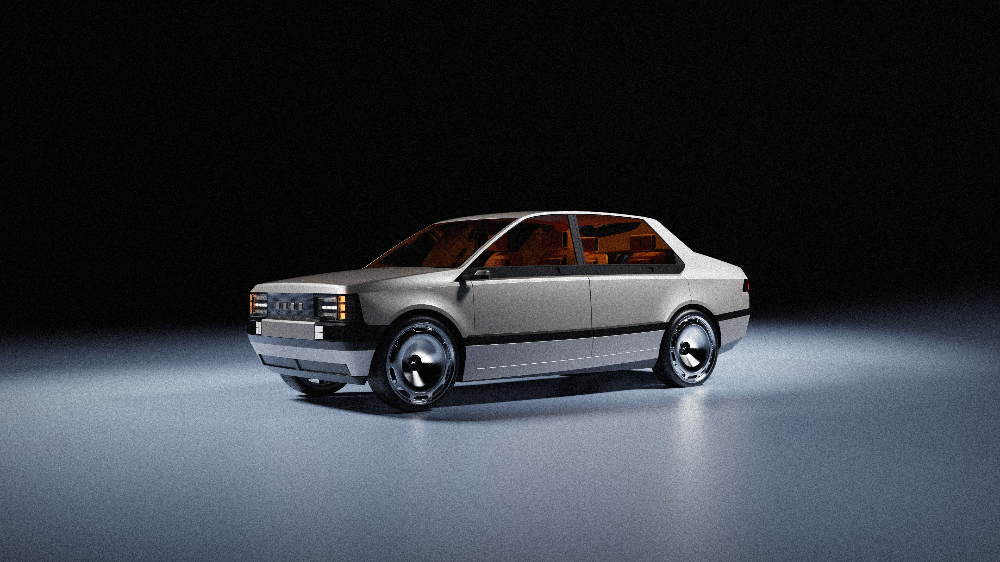
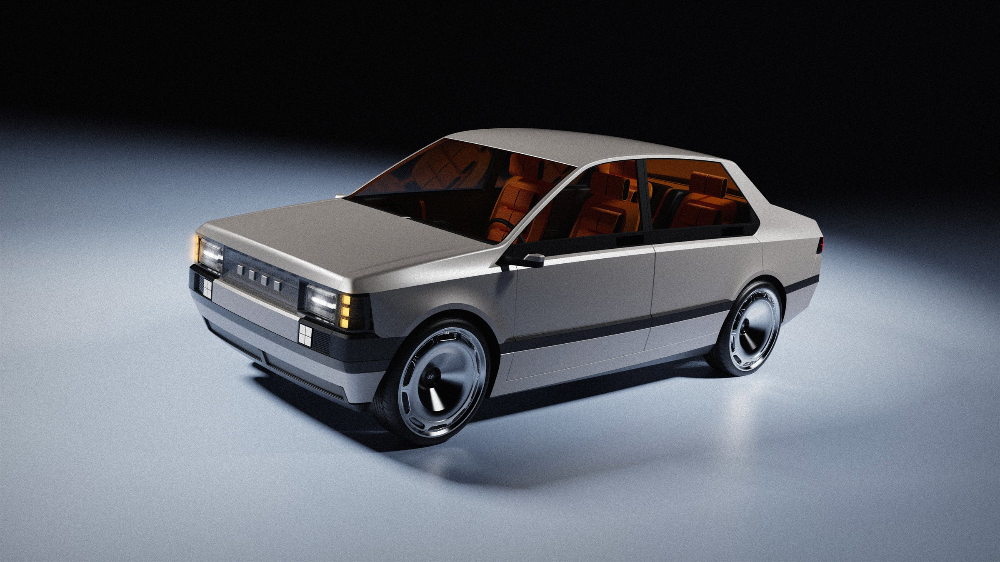
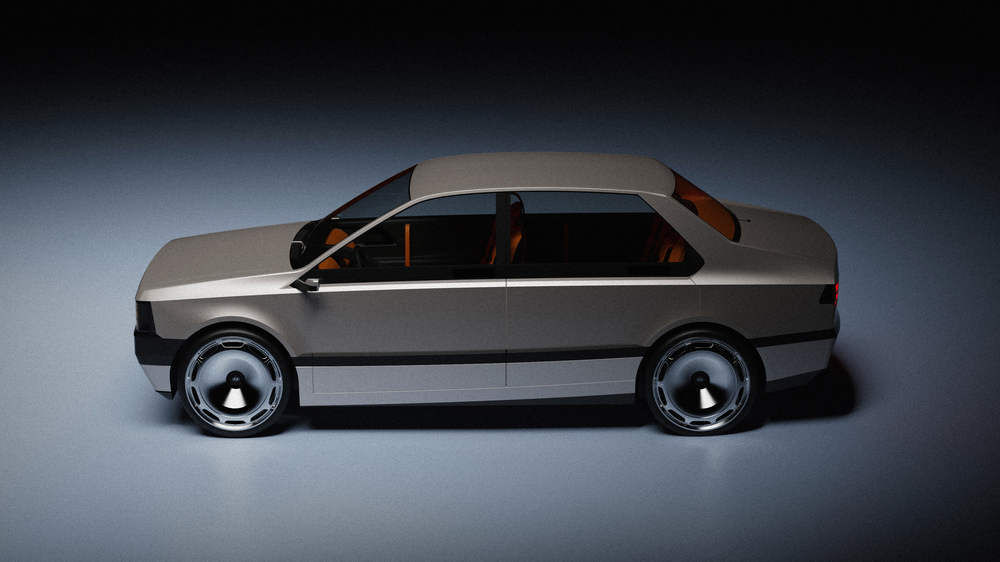
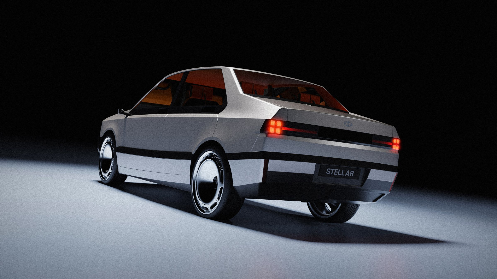
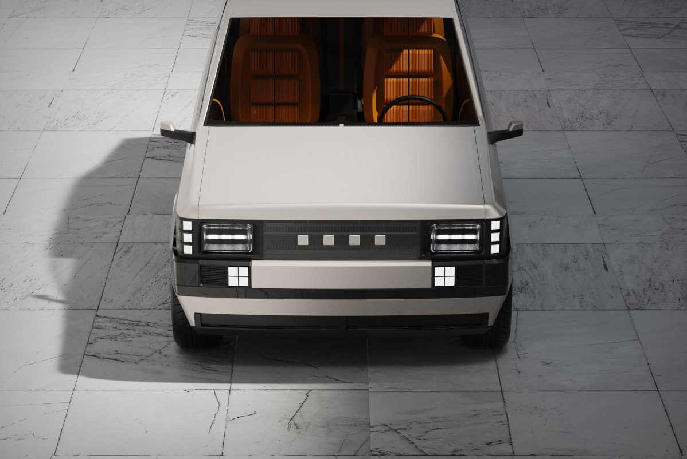
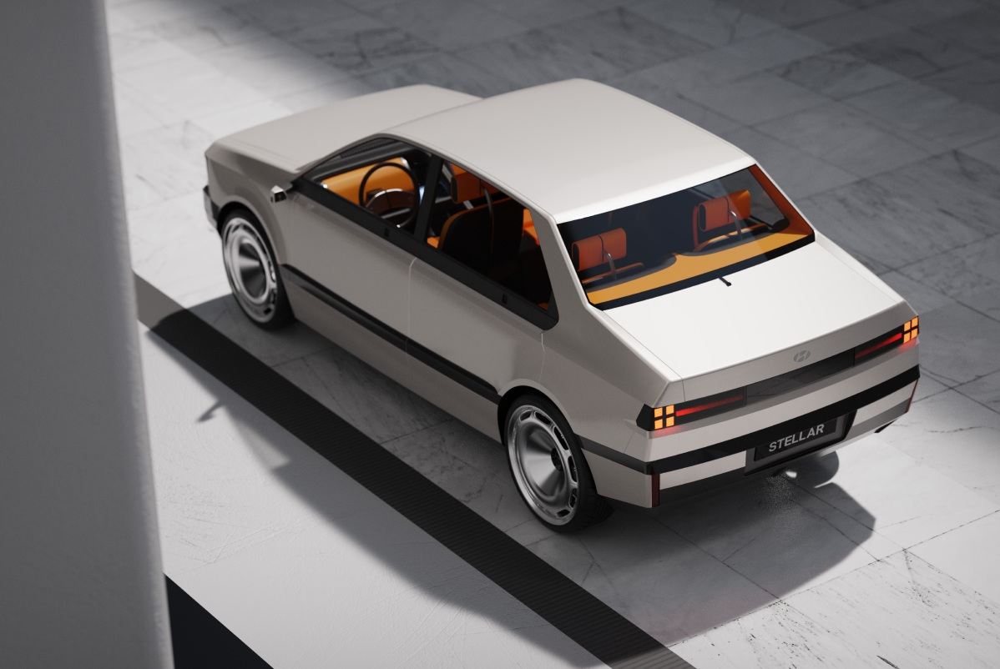

STELLAR, STILL HERE
EREVO
CONNECTING
PAST, PRESENT, AND FUTURE.
?§ÌÖî?ºÎäî ?¨Îãà?Ä ?®Íªò ?Ä?úÎ?͵??êÎèôÏ∞?Ι®Îç∏???úÏûë?êÏù¥???úÎ?Ε??ÅÏßï?òÎäî ?†ÏÇ∞?ºÎ°ú, ?®Ïàú??Í≥ºÍ±∞??Í∏∞Ïñµ???ÑÎãå, ?¨Ï†Ñ???¥ÏïÑ ???¨Îäî ?ÅÍ∞ê???êÏ≤ú?ÖÎãà?? ?∞ζ¨??Í∑?Î≥∏Ïßà??Ï°¥Ï§ë?òΩ¥?úÎèÑ ?ÑÎ????∏Ïñ¥Î°??§Ïãú ?ïÏùò?òÏó¨, ?®Ïàú??Î≥µÏõê???ÑÎãå ?àΰú???îÏûê???∏Ïñ¥?Ä Í≤ΩÌóò?ºÎ°ú ?¨Ìï¥?ùÌïú ?§ÌÖî?ºÎ? ?úÏïà?©Îãà??
Stellar, alongside Pony, stands as a pioneering archetype of Korean automotive history and a heritage symbolizing an era. Far from being a mere relic of the past, it remains a living source of inspiration. Respecting its core essence while redefining it through a contemporary lens, we propose a reincarnated Stellar, reinterpreted not as a simple restoration, but as an entirely new design language and experience.



Ï°∞Ε¥?úÌ܆ Ï£ºÏ??Ñΰú(Giorgetto Giugiaro)Í∞Ä ?ïÏùò???§ÌÖî?ºÏùò ?êÌòï, ϶?Í∏∞Ìïò?ôφÅ?¥Í≥† ?†Ïπ¥Î°úÏö¥ ?êÍ∏∞??Wedge-shape) ?îÏûê??DNAΕ??¨Ï∏µ?ÅÏúºÎ°?Î∂ÑÏÑù?òÏó¨ ?¥Î? ?ÑÎ??ÅÏù∏ ÎπÑÎ?Í∞êÏúºÎ°??¨Íµ¨?±Ìïò????Ïßëϧë?àÏäµ?àÎã§. 1980?ÑÎ? ?∏Îã® Í≥†Ïú†???òÌèâ?ÅÏù¥Í≥??†Ïπ¥Î°úÏö¥ Î≤®Ìä∏?ºÏù∏???†Ï??òÎêò, ?êÏπ´ ?âΩ¥?ÅÏúºÎ°?Î≥¥Ïùº ???àÎäî Ω¥Í≥º Î≥ºÎ•®???ï͵ê?òÍ≤å ?§Îì¨?àÏäµ?àÎã§. ?¥Îûò?ùÌïú ?§Î£®???ÑÏóê ?ÑÎ??ÅÏù∏ ?ΩÏ? ?ºÏù¥??Pixel Light)?Ä Ï∞®Í???Í∏àÏÜç?±ÏùÑ Í∞ïÏ°∞??'?ÑÌä∏ ?§Î∏å ?§Ìã∏(Art of Steel)' ÏΩòÏÖâ?∏Î? Í≤∞Ìï©?? ?®Ïàú??Î≥µÏõê???òÏñ¥ Í≥ºÍ±∞?Ä ÎØ∏ÎûòΕ??áÎäî ?àΰú???àÏä§?†Î™®??Restomod)Ε??úÌòÑ?òÍ≥†???àÏäµ?àÎã§.
This project focuses on deeply analyzing the original Stella's sharp, geometric wedge-shape design DNA defined by Giorgetto Giugiaro and reinterpreting it with modern proportions. While maintaining the classic horizontal, sharp beltline of the 1980s sedan, I meticulously refined the surfaces and volumes that could otherwise appear flat. By fusing the heritage silhouette with contemporary Pixel Light and the 'Art of Steel' concept emphasizing a cold metallic texture, this design goes beyond mere restoration to express a new restomod identity, one that doesn't just look back, but bridges the gap between heritage and the future.

